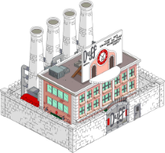

За нас, както и за цялата алкохолна индустрия, е най-важен практическият опит. Нашата мисия е да направим хората, които обучаваме, способни да изпиват промишлени количества алкохол, без да припадат и да им съдействаме в това да избягват всякаква работа.
Учебният план, по който се провеждат занятията в Спиртния Университет, се състои от няколко нива – едно подготвително ниво за приемния практически изпит (2 месеца и ~60 каси бира) и доста нива обучение по системно наливане, технологии на производство на спиртни напитки (всяко по 4 месеца или до изчерпване на количествата). Предоставя се възможност за получаване на лиценз за собствен казан за ракия пред един от нашите университети-партньори след допълнително обучение в градниките зад тях с продължителност 1 или 2 години.